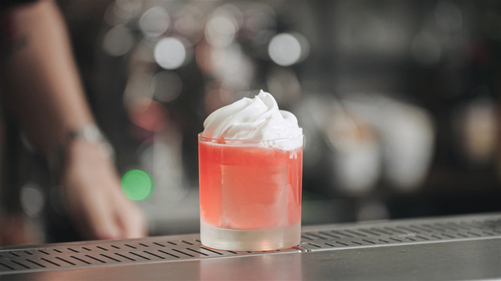

Gottländsk Sommar

Description
Swedish for summer on gottland, this spin on a gin sour takes inspiration
from the beautiful baltic island, adding tastes of a rhubarb, elderflower
and raspberries to make for a real showstopper of a drink.
1 Cocktail
You need:
- Shaker
- Cocktail Strainer
- Cream Siphon
Ingredients:
- 5cl pink gin
- 2cl rose vermouth
- 3cl lemon juice, preferably freshly pressed
- 3dl sugar
- 150 g raspberries
- 1.5 dl water
- 2dl rhubarb juice(Cordial)
- 2dl elderflower juice(Cordial)
- 3 egg whites
Steps:
-
First we need to make the raspberry syrup, cook sugar, water and
raspberry together until it starts to boil and the raspberries
dissolve. Strain into a bottle and let it cool down.
-
Then we make the rhubarb and elderflower foam, mix together the
ingredients into your cream siphon, add two chargers and shake the
siphon vigorously for 10-20 seconds.
-
Now we can finally mix the drink, add ice, pink gin, rose vermouth,
lemon juice and 2cl of your raspberry syrup to your shaker. Shake
vigorously for 5-10 seconds until pour into a low glass with a few
large ice cubes in it.
-
Top the drink up with the foam from your cream siphon and serve, yum!